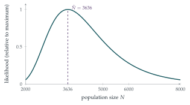

A group of biologists attempts to estimate the magnitude, \(N\), of an island population of voles (Microtus agrestis). Accordingly, the biologists capture a random sample of \(200\) voles, mark them and release them. A second random sample of \(200\) voles is then taken of which \(11\) are found to be marked. Show that the probability, \(p_N\), of this occurrence is given by \[p_N = k\frac{\bigl((N - 200)!\bigr)^2}{N!\,(N - 389)!},\] where \(k\) is independent of \(N\).
The biologists then estimate \(N\) by calculating the value of \(N\) for which \(p_N\) is a maximum. Find this estimate.
All unmarked voles in the second sample are marked and then the entire sample is released. Subsequently a third random sample of \(200\) voles is taken. Write down the probability that this sample contains exactly \(j\) marked voles, leaving your answer in terms of binomial coefficients.
Deduce that \[\sum_{j=0}^{200}\binom{389}{j}\binom{3247}{200 - j} = \binom{3636}{200}.\]
The hook
How many voles live on an island? Counting them is impossible: they hide, they move, they look alike. But you can catch some, mark them, let them go, and catch some more. If \(200\) are marked and, in a second catch of \(200\), \(11\) turn out to be marked, then roughly \(\frac{11}{200}\) of the population is marked, so the population is about \(200 \times \frac{200}{11} \approx 3636\).
This capture–recapture method is used to estimate populations of fish, birds and whales, and also of drug users, homeless people and casualties of war, any population that cannot be fully counted. The question puts the intuitive estimate on a firm footing using the principle of maximum likelihood, the most important idea in statistical estimation: choose the value of the unknown that makes the observed data most probable.
Before you start
The population has \(N\) voles, \(200\) of them marked. A random sample of \(200\) is taken. What is the probability that exactly \(11\) are marked?
Choose \(11\) of the \(200\) marked voles and \(189\) of the \(N - 200\) unmarked ones, out of \(\binom{N}{200}\) equally likely samples: \[p_N = \frac{\binom{200}{11}\binom{N - 200}{189}}{\binom{N}{200}}.\] This is the hypergeometric distribution.
Working it through
Stage 1 The likelihood
Writing out the binomial coefficients that involve \(N\), \[\binom{N - 200}{189} = \frac{(N - 200)!}{189!\,(N - 389)!}, \qquad \binom{N}{200} = \frac{N!}{200!\,(N - 200)!},\] so \[p_N = \binom{200}{11}\frac{200!}{189!}\cdot\frac{\bigl((N - 200)!\bigr)^2}{N!\,(N - 389)!} = k\frac{\bigl((N - 200)!\bigr)^2}{N!\,(N - 389)!}. \qed\] Seen as a function of the unknown \(N\), with the data fixed, \(p_N\) is called the likelihood.
Stage 2 Maximising over a whole number
\(N\) is a whole number, so calculus is awkward. Instead compare \(p_{N+1}\) with \(p_N\). When is their ratio bigger than \(1\)?
Most of the factorials cancel: \[\frac{p_{N+1}}{p_N} = \frac{(N - 199)^2}{(N + 1)(N - 388)}.\] This exceeds \(1\) when \((N - 199)^2 > (N + 1)(N - 388)\), that is \(N^2 - 398N + 39601 > N^2 - 387N - 388\), or \(11N < 39989\), \(N < 3635.4\). So \(p_N\) increases up to \(N = 3636\) and decreases afterwards: the maximum likelihood estimate is \[\hat N = 3636. \qed\] This is the integer part of \(\frac{200 \times 200}{11} = 3636.4\), the intuitive estimate.
Stage 3 A third sample
After the second sample, the \(189\) unmarked voles in it are marked too, so \(389\) voles are now marked. Taking \(N = 3636\), there are \(3636 - 389 = 3247\) unmarked. A third sample of \(200\) contains exactly \(j\) marked voles with probability \[\frac{\binom{389}{j}\binom{3247}{200 - j}}{\binom{3636}{200}}.\] These probabilities, for \(j = 0, 1, \ldots, 200\), must add up to \(1\), which gives the identity.■

Looking back
Probability of the data, as a function of the unknown. The likelihood reverses the usual viewpoint: the data are fixed and the parameter varies.
Ratios for discrete maximisation. Comparing consecutive terms located the maximum of a function of an integer.
Probabilities add to \(1\). Summing a distribution over all outcomes proved a combinatorial identity (Vandermonde’s identity).
What’s really going on
Maximum likelihood
The principle of maximum likelihood, developed by Ronald Fisher in the 1910s and 1920s, says: estimate an unknown parameter by the value that makes the observed data most probable. It is by far the most widely used method of estimation, from fitting curves to data to training the neural networks of machine learning, whose “loss functions” are usually negative log-likelihoods. Fisher showed that, for large samples, maximum likelihood estimates are approximately normal and as precise as any reasonable estimator can be.
How precise is the estimate?
Figure 13.2.1 shows that the likelihood is broad: \(11\) recaptures is not much information. A rough calculation: the number of marked voles in the second sample is approximately Poisson with mean \(\frac{200 \times 200}{N}\), so its standard deviation is about \(\sqrt{11} \approx 3.3\), a relative error of about \(30\%\), which carries over to the estimate of \(N\). To estimate \(N\) to within \(10\%\), the biologists would need about \(100\) recaptures. Statisticians also correct for the small bias of the simple estimate, using the Chapman estimator \(\frac{(M + 1)(C + 1)}{R + 1} - 1\), where \(M\) and \(C\) are the sizes of the two catches and \(R\) the number recaptured.
Laplace used the same idea in 1802 to estimate the population of France without a census. He knew the number of births registered in the whole country in a year, and, for a sample of communes, both the population and the births. Assuming the ratio of population to births was the same everywhere, he estimated the population of France at about \(28\) million, and even gave a measure of the uncertainty. The method was rediscovered for animal populations by C. G. J. Petersen, who marked plaice in Danish fjords in the 1890s, and by Frederick Lincoln, who used bird rings in the 1930s; it is still often called the Lincoln–Petersen estimator.
The thinking skill
To estimate an unknown, write the probability of what you observed as a function of the unknown, and maximise it.
At university, maximum likelihood is the backbone of statistical inference, with a theory of how precise the estimates are (the Fisher information) and how to compare competing models (likelihood ratio tests).
Try this next
General formula. If \(M\) animals are marked and a second sample of \(C\) contains \(R\) marked, show that the maximum likelihood estimate of \(N\) is the integer part of \(\frac{MC}{R}\).
Vandermonde. Prove \(\sum_j\binom{a}{j}\binom{b}{c - j} = \binom{a + b}{c}\) by counting committees of \(c\) people chosen from \(a\) women and \(b\) men.
Coin tosses. In \(n\) tosses of a coin with unknown probability \(p\) of heads, \(h\) heads are observed. Show that the maximum likelihood estimate of \(p\) is \(\frac hn\).
No recaptures. What happens to the maximum likelihood estimate if the second sample contains no marked voles? What does that tell you about the method?
Further reading
David Spiegelhalter, The Art of Statistics (Pelican), on estimation and uncertainty.
George Seber, The Estimation of Animal Abundance (Blackburn). The standard reference on capture–recapture.
John Rice, Mathematical Statistics and Data Analysis (Duxbury). A first course in mathematical statistics, including maximum likelihood.